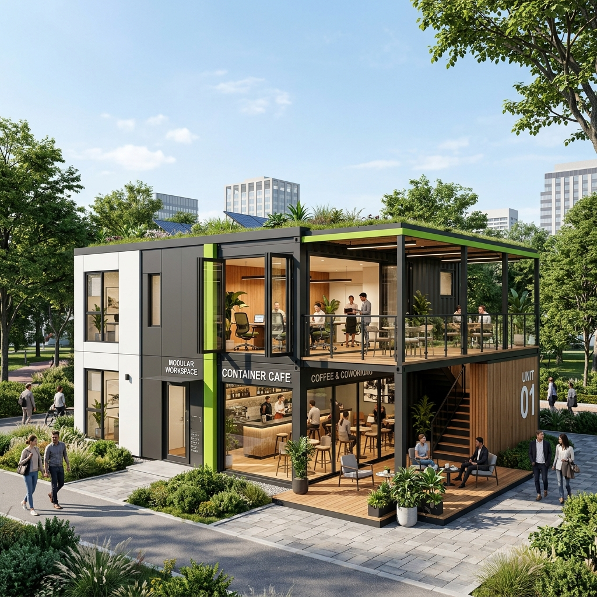

Estetik ve işlevselliği birleştiren modern modüler yaşam alanları.
AFAS Ofis ve Kafe Üniteleri, modüler ünite tabanlı mimarinin estetik sınırlarını zorlayan premium yapılardır. Katlanır cam balkon sistemleri sayesinde hem kapalı hem de açık kullanım imkanı sunar.
Vitrin bölümlerinde kullanılan katlanır cam sistemleri, ünitelere ferah ve modern bir görünüm kazandırırken, sandviç panel duvarlar üstün izolasyon performansı sağlar.